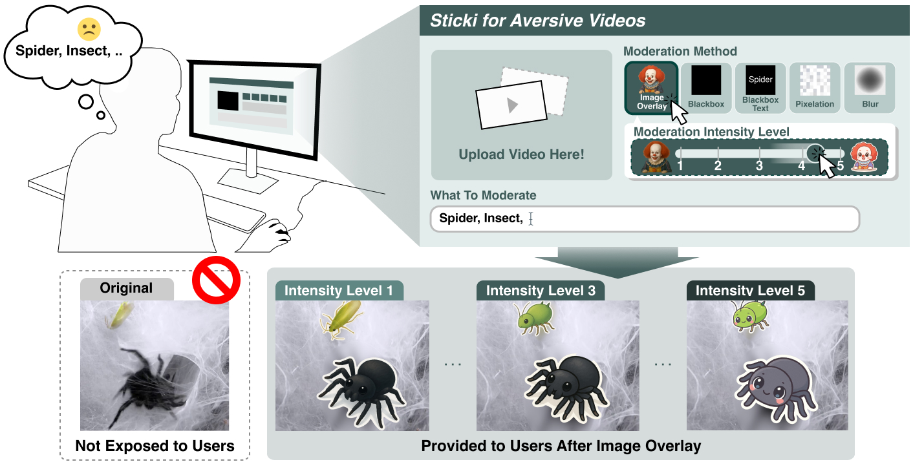
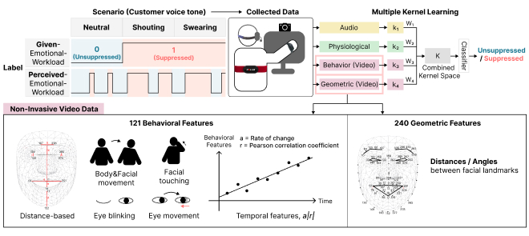
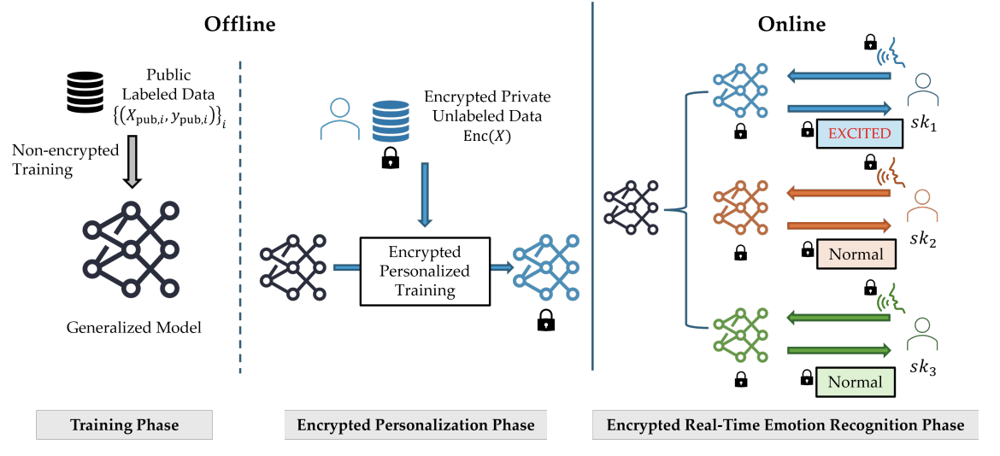
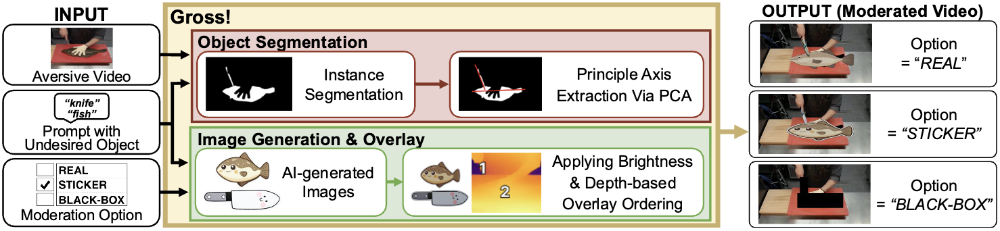
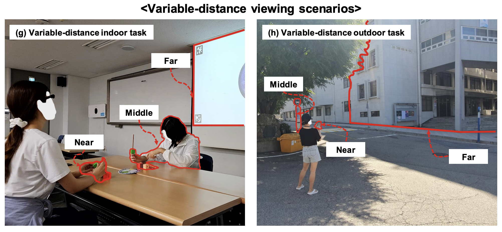

Chung-Ang University
Sep 2025 – Feb 2027 (expected)M.S. in Computer Science and Engineering · Cyber-Physical Systems
Interaction+X Lab (IXLAB)
Human-Centered AI · Multimodal Learning · Behavior Simulation
I study multimodal sensing and human behavior modeling, focusing on how intelligent systems can interpret human states and actions. My work connects real-world sensor data analysis with simulation-based modeling to understand how people perceive, act, and respond.
My long-term goal is to help build human-aware autonomous systems that can anticipate human behavior and make context-sensitive decisions in dynamic environments. I hope to use simulation to examine these decisions across diverse scenarios and help bring more reliable autonomy into real-world settings.
Outside research, I enjoy badminton and have competed in national tournaments, earning several awards, including a first-place finish.
M.S. in Computer Science and Engineering · Cyber-Physical Systems
Interaction+X Lab (IXLAB)
B.S. in Software
Graduated with the second-highest academic standing in the Department of Software
Graduate Researcher (Sep 2025 – Present)
Undergraduate Researcher (Dec 2023 – Aug 2025)
Developed feature extraction and multimodal learning pipelines for emotional workload recognition. Evaluated modality contributions and generalization to unseen users.
Built eye-tracking preprocessing, synchronization, automatic labeling, and verification tools. Compared distance classification across controlled, indoor, and outdoor settings.
Studying human driving behavior through simulation and behavioral evaluation.
Designed and evaluated personalized video filtering interfaces. Contributed to encrypted physiological inference through data processing, feature extraction, and accuracy–latency evaluation.
* Co-first authors (equal contribution). My name is shown in bold.

Yejin Choi*, Dohwa Kim*, Youngeun Jun, Hyosu Kim, and Eunji Park
ACM Symposium on User Interface Software and Technology

Yejin Choi, Yejin Jang, and Eunji Park
IEEE Access
Paper ↗
Gyeongwon Cha*, Dongjin Park*, Yejin Choi, Eunji Park, and Joon-Woo Lee
Proceedings of the ACM on Interactive, Mobile, Wearable and Ubiquitous Technologies, 9(4), Article 163
Paper ↗
Yejin Choi*, Dohwa Kim*, Youngeun Jun, Hyosu Kim, and Eunji Park
ACM UIST Adjunct Proceedings
Poster ↗Poster People's Choice Honorable Mention
Yejin Jang, Yejin Choi, and Eunji Park
Korean Institute of Communications and Information Sciences Fall Conference · In Korean
Paper ↗
Dohwa Kim*, Yejin Choi*, Seungbok Lee, Chi Yoon Jeong, and Eunji Park
arXiv ↗Modeling human driving behavior in simulation and evaluating it against real driver observations.
Chung-Ang University · Gross!
GitHub ↗Gross!
Chung-Ang University · StoryBridge
GitHub ↗Uni-D · Image Restoration
Chung-Ang University
Seoul Lab Partners × Chung-Ang University · sPrint
Chung-Ang University · Tuition scholarship
National Research Foundation of Korea
Chung-Ang University · University, academic merit, and specialized program scholarships